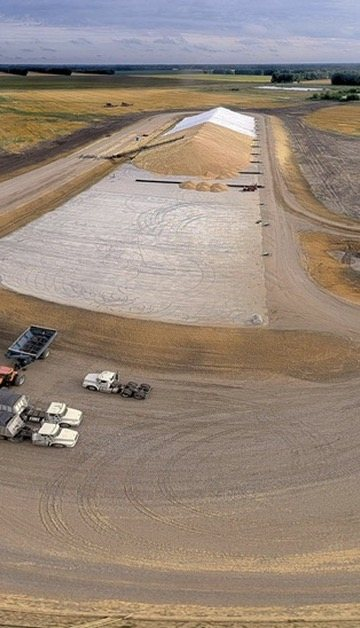
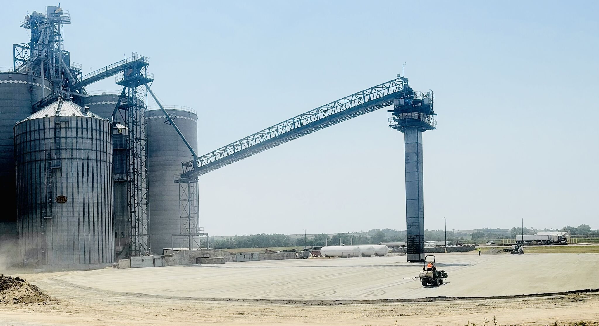

Durable, high-load surfaces for grain piles, loadout areas, equipment paths and harvest-season traffic.
Plan a Grain Project →Grain facilities see heavy trucks, loaders, augers and seasonal traffic. RCC creates a hard, durable surface that reduces rutting and keeps equipment moving in changing weather.
Selected grain-site and agricultural paving projects showing RCC surfaces during construction and in service.




Let’s discuss your site, size and timing.
Request an Estimate →